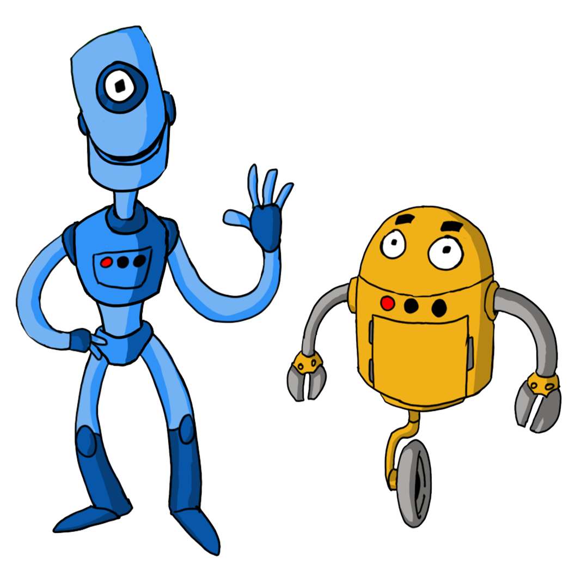

Después de una larga noche de fiesta en la antigua fábrica, Eric y Bimo despiertan desorientados, con resaca... ¡y algunas piezas de menos!
¡Ayúdales a encontrar todas las piezas que han perdido!
Sinopsis
Las unidades Eric y Bimo acaban de reiniciarse después de una noche desenfrenada en la fábrica.
Los circuitos fallan: el aceite que tomaron era de baja calidad.
Locobots es un videojuego de plataformas en 2D ambientado en un futuro distópico donde los robots viven en un mundo alocado y se divierten.
Se dispone de dos personajes distintos para jugar la aventura: Eric y Bimo. El jugador debe utilizar el teclado para dirigir a al personaje seleccionado y recuperar las piezas que han perdido la noche anterior por los diferentes escenarios de la antigua fábrica.
¡Tuercas, engranajes, tornillos y muelles! Cada elemento recogido sube puntos al marcador. Una vez recogidos todos, Eric y Bimo podrán pasar al siguiente nivel si los consiguen recoger a tiempo.
Durante la aventura, varios de tus amigos robóticos te echarán una mano.
Pero ¡ten cuidado con tus circuitos! Los robots vigilantes de la fábrica están por todas partes y necesitas tu rayo láser para detenerlos.
Pulsa Enter para continuar con esta aventura.
